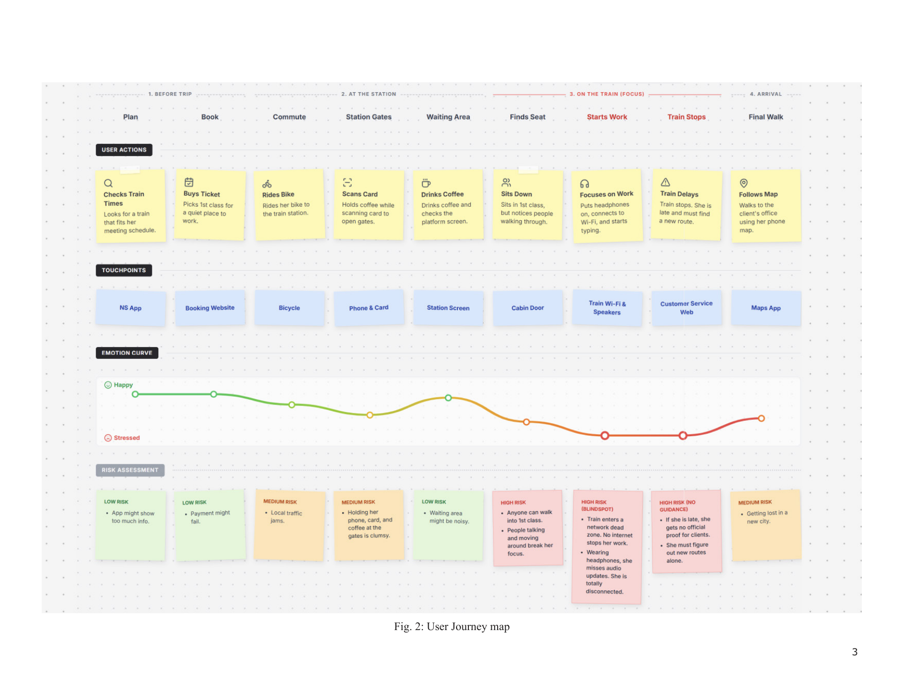
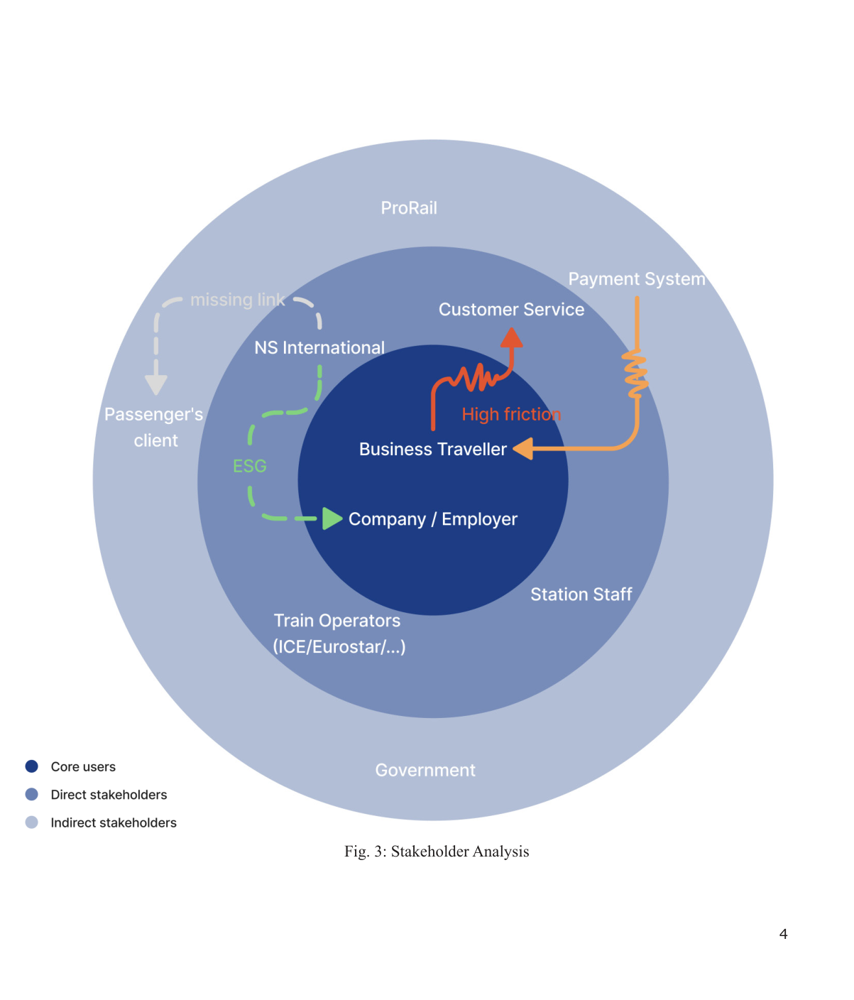
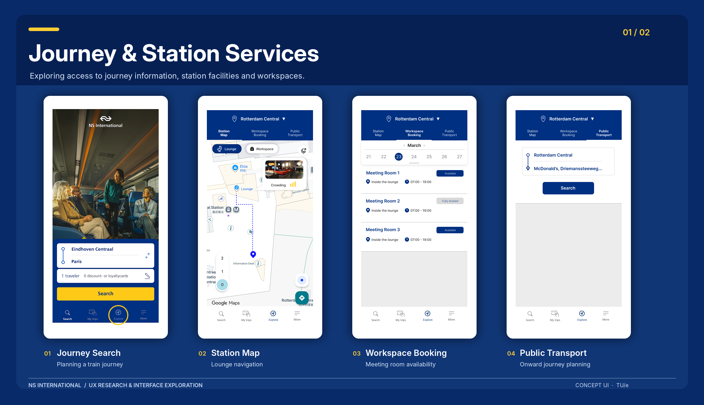
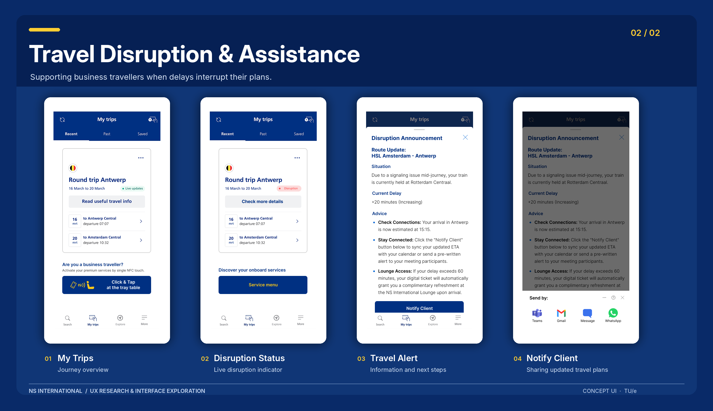

Improving the International Train Travel Experience.
A conceptual UX exploration for NS International business travellers.

Project Overview.
This short design challenge explored how international business travellers could be better supported across their journeys. Our team investigated fragmented travel information, missed disruption alerts and the difficulty of making decisions under time pressure. We explored improvements to digital touchpoints within the NS International travel experience, informed by journey mapping and stakeholder analysis.
Understanding the Journey.
We mapped the end-to-end journey and its connected services to identify friction points. In particular, travellers working with headphones could miss important updates, while disruptions could force them to search across multiple systems for reliable guidance.


Exploring Digital Touchpoints.
Building on these findings, we created concept interfaces for station navigation, workspace booking and journey disruption support. The screens below are design proposals rather than implemented NS International features.




My Role.
My contributions included discussions on the overall design direction, stakeholder analysis and UI design. The challenge helped me explore how user needs, interface decisions and service-level constraints connect in a business travel context.
TU/e · DDM150 User Experience Theory and Practice · Team 14 (Dirk Knapen, Chenghao Wang, Hanxu Yu, Nidhi Hira). This was a short concept-design exercise based largely on secondary research; the proposals have not been validated through systematic testing with international business travellers.